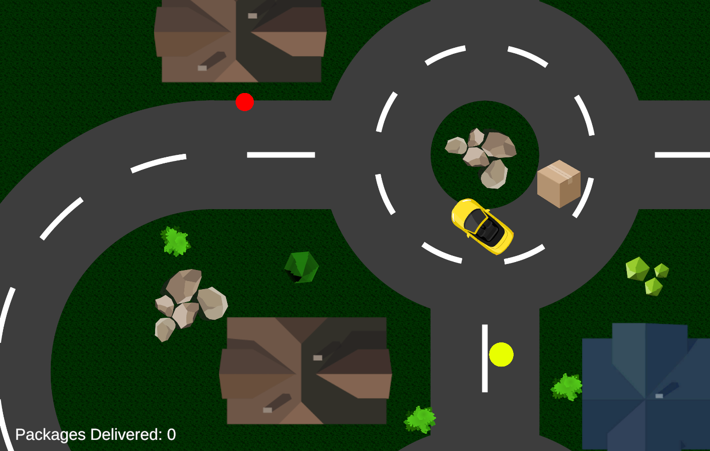
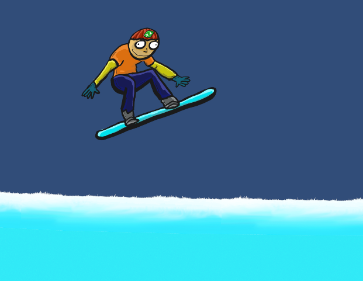

This site is an informational page highlighting some of my projects that I have completed during school and personal information about me.
Developers: Charlie Van Abbema and myself.
Goal: Create a Nuget Package that people would find useful by better understanding how default functions work and recreating them for programmers to use in their projects.
The delivery driver lab consisted of creating a drivable car that picks up "deliveries" and required the player
to return the delivery to a specific area to score a point.
Although simple sounding, this game introduced
velocity, player controls, interacting with objects, and more new topics that would help in later game
development.
GitHub repo here.
MacOS download here.
The code snippet defines what should happen to the player when the player
interacts with an object with the script.
This snippet is a part of a longer piece of code, but this small piece of code detects whether or not the
player has successfully returned a package.
If the tag of the object is "Customer" and the player has a package while driving over the delivery zone,
the
total delivered amount will update, the car will change colors, and the boolean "hasPackage" will become false,
meaning the player can now retrieve another package.
if (other.tag == "Customer" && hasPackage == true) {
totalDelivered++;
Debug.Log($"You delivered: " + totalDelivered + " packages.");
packageObtained.text = $"Packages Delivered: " + totalDelivered;
spriteRenderer.color = noPackageColor;
hasPackage = false; }
The snowboarder lab lets the player simulate snowboarding on a snowhill.
By using the left and right arrow keys, the player could tilt the player forward and backwards in hope of making it to the end of the level.
GitHub repo here
MacOS Download here.

This code snippet defines what should happen when the top of the player touches the ground.
If the tag is "Ground" and the boolean "hasCrashed" is false:
Control over the player will be disabled
void OnTriggerEnter2D(Collider2D other) {
if (other.tag == "Ground" && !hasCrashed) {
FindObjectOfType().DisableControls();
hasCrashed = true;
crashEffect.Play();
GetComponent().PlayOneShot(crashSFX);
Invoke("ReloadScene", delayTime);
}
}
The quiz master lab was a simple game for learning switching scenes in Unity, but also a chance to create a
simple quiz for fun.
GitHub repo here.
This code snippet defines how the game will generate a random
question.
First, the variable "index" is set to a random range of 0 to the amount of questions created.
The variable "currentQuestion" is set to the random number picked above. That will be the question
displayed.
Last, the script checks for duplicate questions and removes them.
void GetRandomQuestion() {
int index = Random.Range(0, questions.Count);
currentQuestion = questions[index];
if (questions.Contains(currentQuestion)) {
questions.Remove(currentQuestion);
}
}
Blair Ciolk
18 Years Old
Freshman at GRCC
Ever since I can remember, I have wanted to develop games.
In my free time, I enjoy
playing games such as Far Cry and Just Cause.
I love many different types of music but I specifially love
$uicideBoy$.
An interesting fact about me is that I had open heart surgery in the fifth grade, replacing my
inadequate pulmonary valve with a stronger, healthier one.
Email: blairciolk@gmail.com
Github: GitHub Account
Resumé View My Resumé